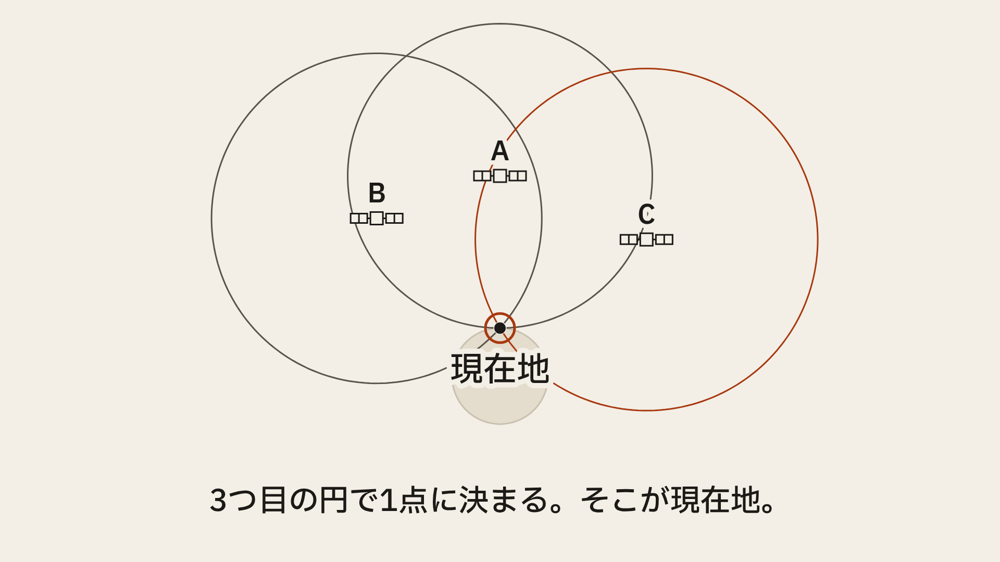
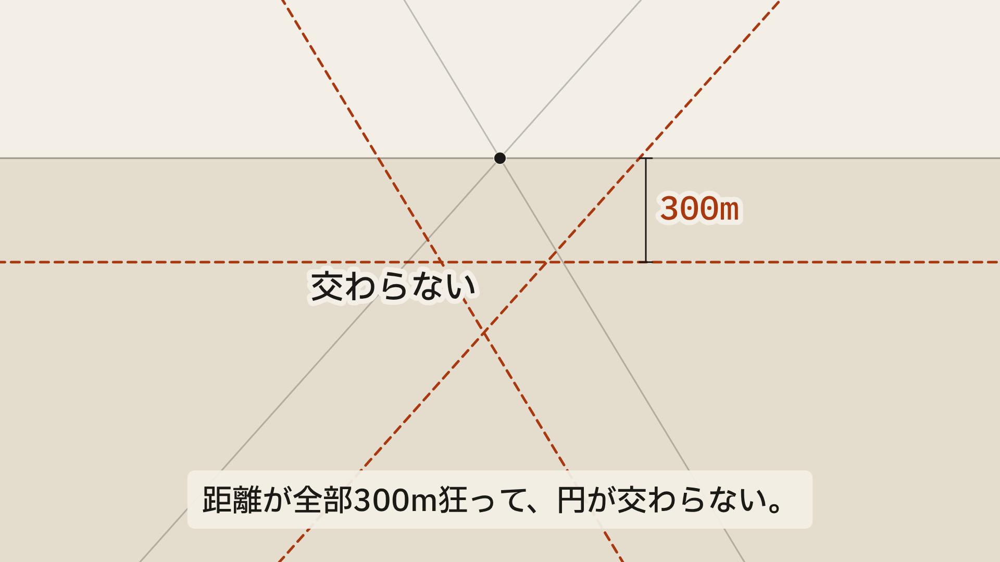
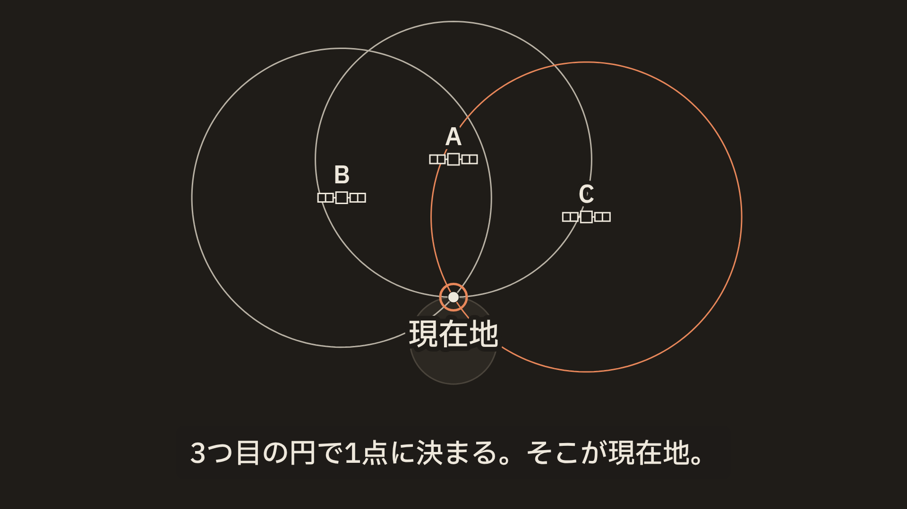
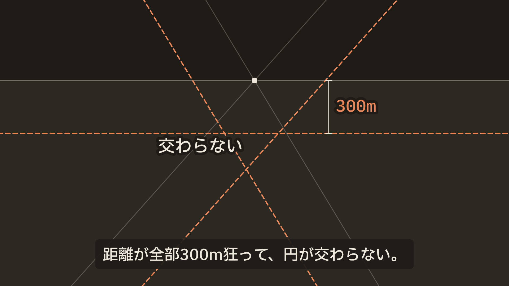
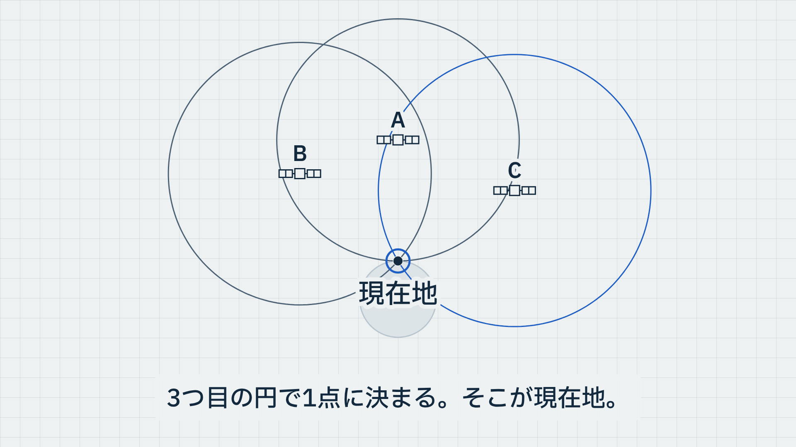
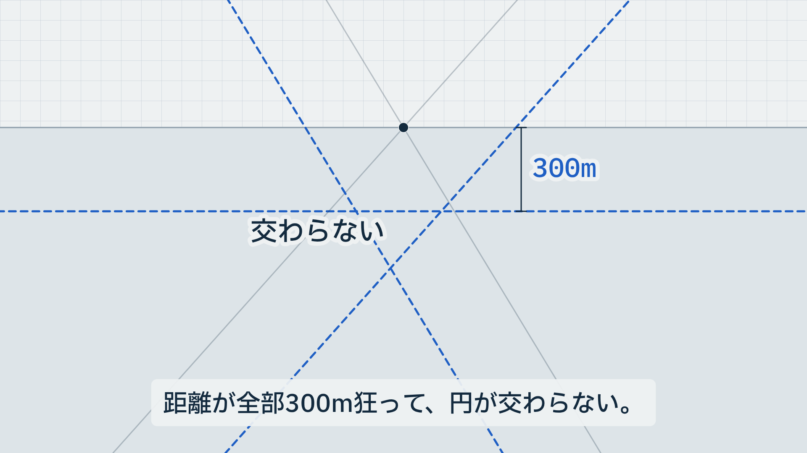
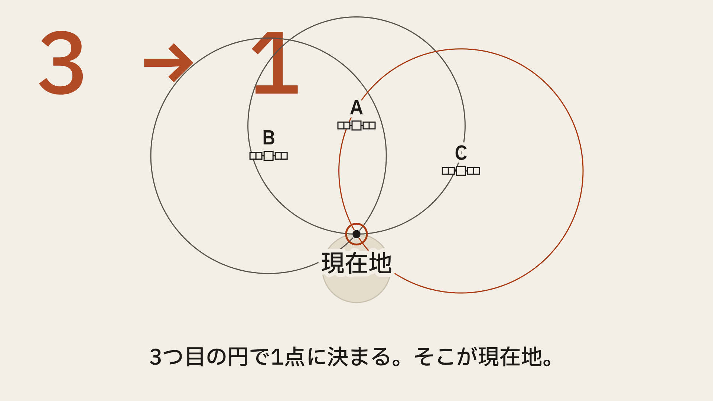
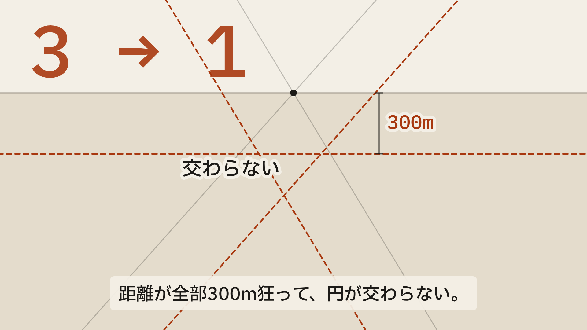

4つの方向性と、選んだ理由
同じ2つの瞬間（3つ目の円で1点に決まる b55 ／ 時計のずれで円が交わらない b77）を、4つの見た目で描いた。判断の基準は「1つの考え（遅れ→距離→円の交点）が一番まっすぐ読めるか」。
WINNER · A
A — 紙の測量図


- 暖かい紙の地、墨の線、信号と時刻だけにアクセント1色。
- 実寸の幾何（km）がそのまま図になる。飾りが要らない。
- アクセントが「信号の糸」を最初から最後まで追える。
- 明るい画面でも、390px幅でも線と文字が残る（全ペア 4.5:1 以上）。
B
B — 夜の計器


- 宇宙らしさは出るが、「宇宙の絵」に寄って発光や星を足したくなる。
- 細い線が圧縮で痩せる。暖かい中間色の地という指定からも外れる。
C
C — 青焼き


- 方眼が意味を持たないテクスチャになる（縮尺も方位も表さない）。
- 冷たい地で「技術文書」に見え、日常の地図アプリから遠ざかる。
D
D — 大きな数字


- 「3→1」が主役になり、交点という本題と視線を奪い合う。
- 数字は理解の結果であって原因ではない。抑制の原則で削る。
決定ログ
| 問い | 答え |
|---|---|
| 誰のため？ | 毎日地図アプリを使い、「衛星が自分を見つけている」と思っている日本語話者。 |
| 何を伝える？ | GPSは一方通行。遅れ×光速＝距離、円の交点が現在地。時計のずれを解くために衛星がもう1つ要る。 |
| 名前は要る？見えないままでいい？ | 用語（三辺測量、擬似距離）は出さない。名前を付けるのは「遅れ」「距離」「円」「現在地」だけ。仕組みは見えないまま、図が説明する。 |
| 選んだ方向 | A。理由は上のとおり。B〜Dは見た目の魅力はあるが、どれも図以外に視線を割く。 |